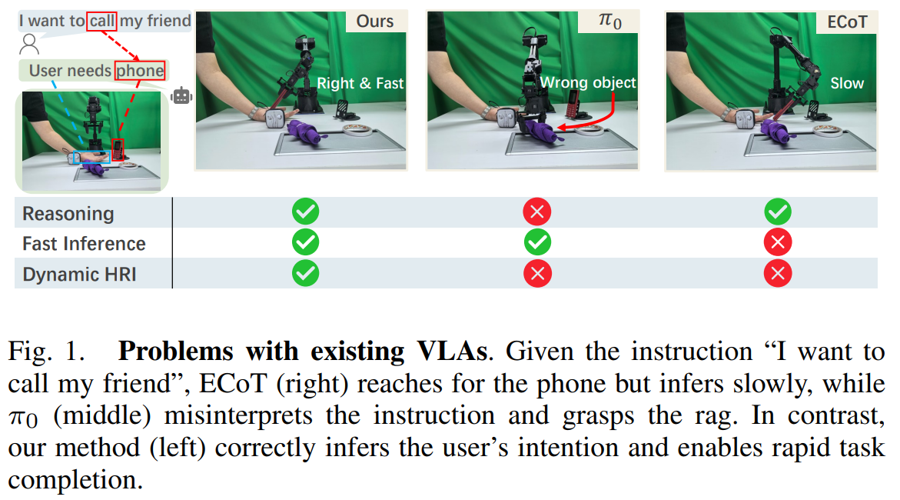
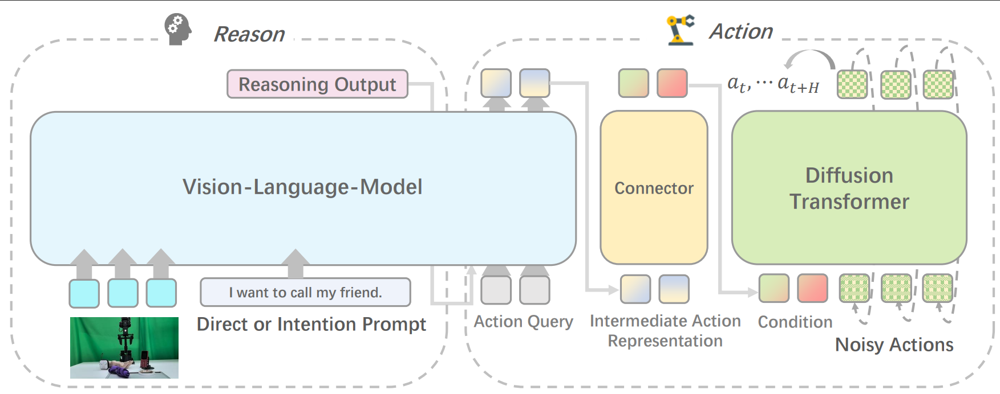
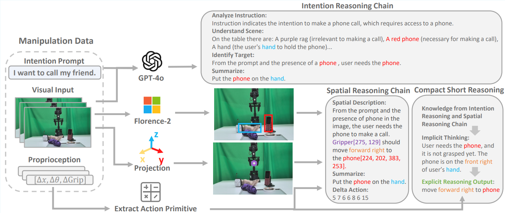
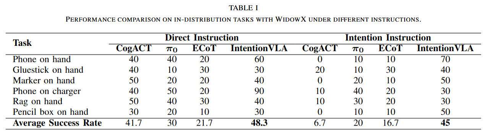
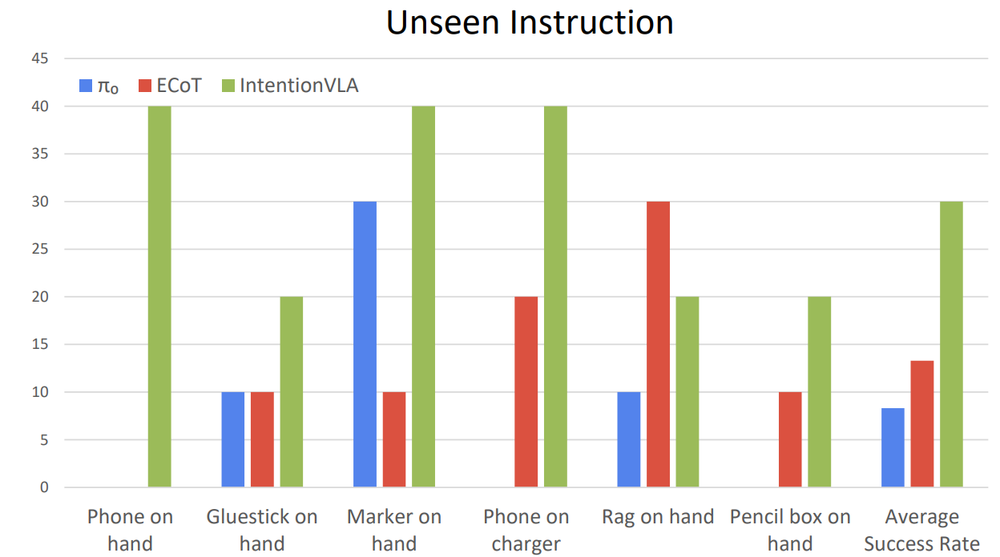
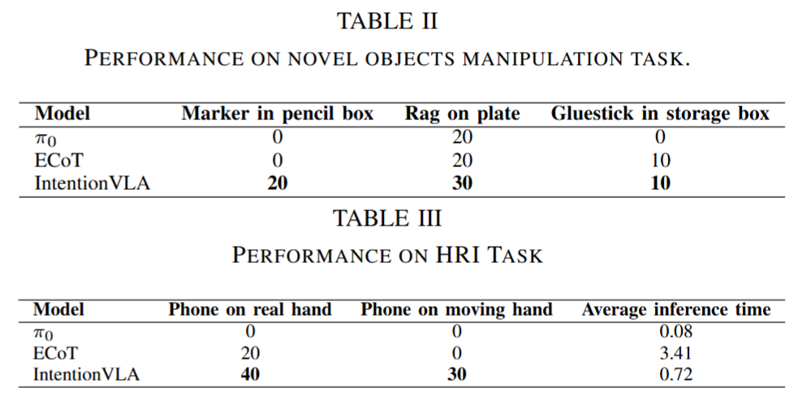

IntentionVLA: Generalizable and Efficient Embodied Intention Reasoning for Human-Robot Interaction
Accepted by ICRA 2026
1Harbin Institute of Technology(Shenzhen),
2Nanjing University,
3University of Science and Technology of China,
4Dexmal
This work was done during the internship at Dexmal.
†Project lead.
‡Corresponding Author.
Video
We propose the first Vision-Language-Action model that can ground implicit user intentions in cluttered environments, achieving superior performance against SOTA methods.
Abstract
Vision-Language-Action (VLA) models leverage pretrained vision-language models... (此处省略部分正文保持代码简洁)

Method

Model Architecture of IntentionVLA.

Performance



BibTex
@misc{chen2025intentionvlageneralizableefficientembodied,
title={IntentionVLA: Generalizable and Efficient Embodied Intention Reasoning for Human-Robot Interaction},
author={Yandu Chen and Kefan Gu and Yuqing Wen and Yucheng Zhao and Tiancai Wang and Liqiang Nie},
year={2025},
eprint={2510.07778},
archivePrefix={arXiv}
}
Contact
Feel free to contact us at yanduchen77@gmail.com
Visitor Count